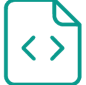

Crafting innovative solutions and memorable experiences. Explore my journey, projects, and insights into the world of creative technology.
Digital Visionary & Creative Strategist
I am a passionate Creative Technologist driven by the intersection of design, data, and human experience. With a background spanning product development and strategic communication, I specialize in transforming complex challenges into elegant, user-centric solutions. My work is not just about building things; it's about creating meaningful impact.
Future-forward design
Transparent collaboration
Measurable results
These accomplishments represent pivotal moments in my career, demonstrating my commitment to leadership, innovation, and measurable success across various disciplines.
Led a cross-functional team to develop and launch a platform that resulted in a 30% efficiency increase for client operations. Received industry-wide recognition for scalable architecture.
Achieved top-tier certification in Advanced Data Modeling and Predictive Analytics, enabling the creation of five new proprietary algorithms currently utilized by the firm.
Founded and scaled a company-wide mentorship program for junior staff, which has since contributed to a 20% reduction in employee turnover within the first year.
Instrumental in the design and market positioning of a SaaS application that was successfully acquired by a major industry leader, achieving a 10x return on investment.
A selection of projects where I leveraged strategic thinking and technical skills to deliver tangible results. Each project is a testament to my adaptability and drive for excellence.
Role: Lead UX/UI Designer & Data Visualizer. Used React and D3.js to create an intuitive dashboard for large datasets. Outcome: Improved client reporting time by 45%.
Role: Product Manager & Front-End Developer. Managed the full development lifecycle using Swift/Kotlin. Outcome: Achieved 5,000 active users within the first three months.
Role: Core Architect. Designed a machine learning model (Python/TensorFlow) to detect anomalies in network traffic. Outcome: Reduced false positive alerts by 60%.
My skillset is a balanced blend of hard technical abilities and soft, strategic competencies, allowing me to bridge the gap between engineering and creative vision.

Client Endorsement: "Their ability to translate complex technical requirements into elegant user experiences is unparalleled. A true full-stack contributor."